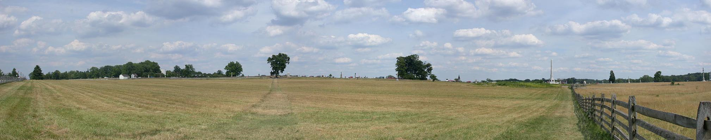

Day Three with Prof. Gary Gallagher / NK010728123839_871
7/28/2001

Emmitsburg Road looking north
Bryan farm
Cyclorama building
The angle
Copse of trees
US Regulars monument
The last few hundred yards. Looking east from the Emmitsburg Road at the angle.